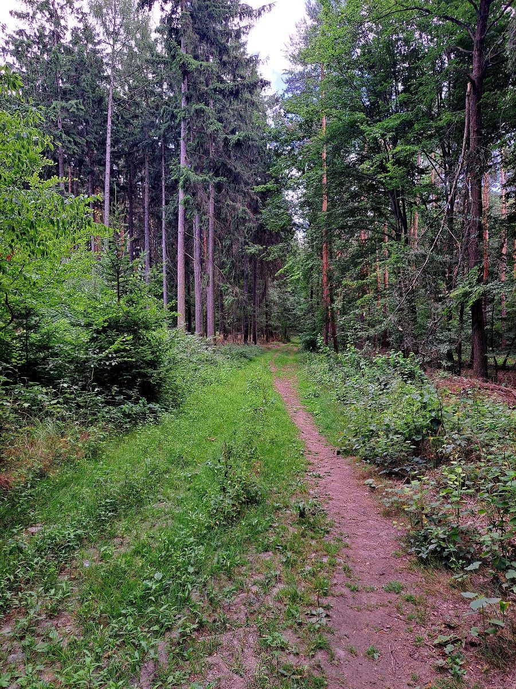
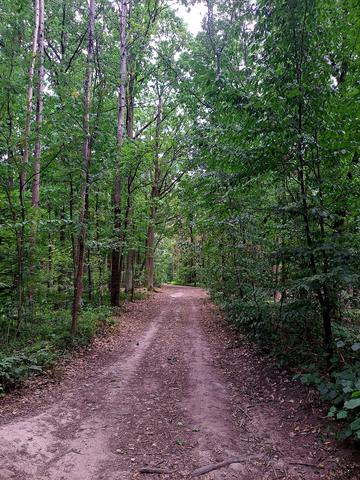
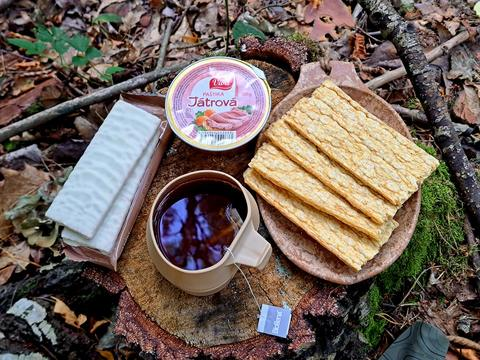

Potulka
S mlokem na biltemu






🌲 Dnes jen krátká lesní potulka.🎯 Podařilo se odlovit jednu biltema keš, takže spokojenost. 🍵 Chvilka klidu u malé svačiny s čajem mezi stromy. 🏡 A pak už směr domov.
✨Někdy stačí málo, aby byl den fajn.
Na webu jsou vybrané fotky. Všech 17 fotek z této potulky najdete na Facebooku BCT Survival.